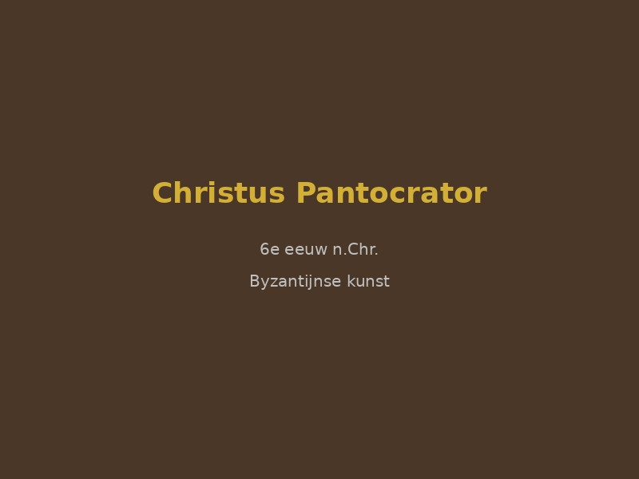
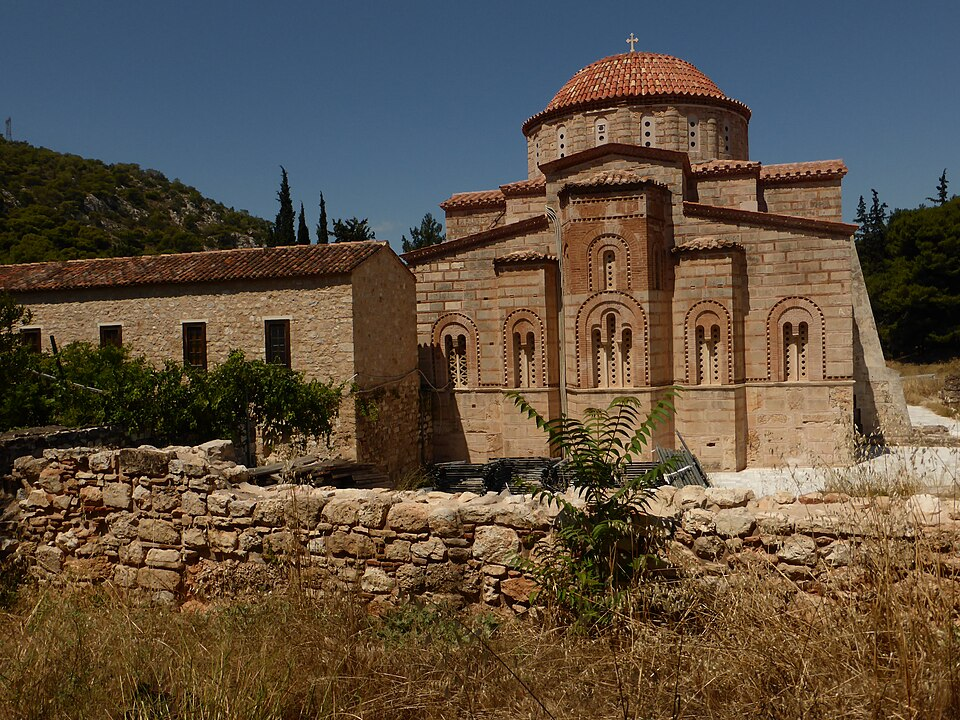
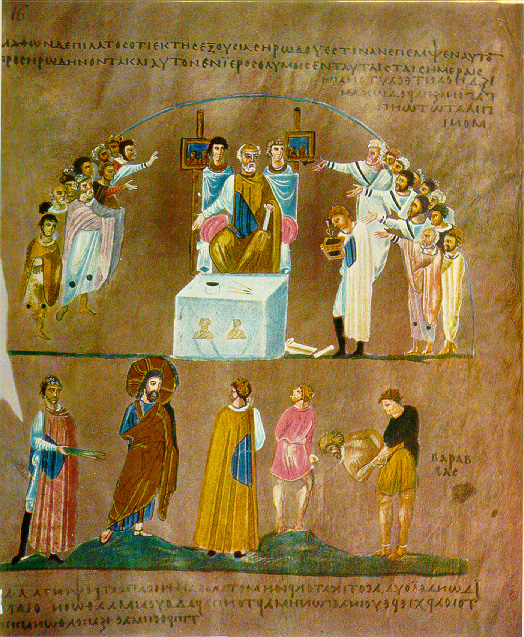
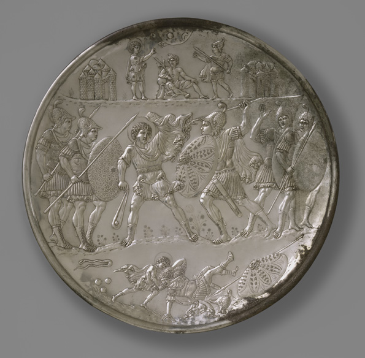
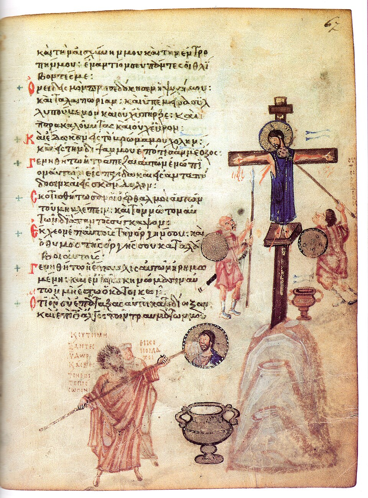
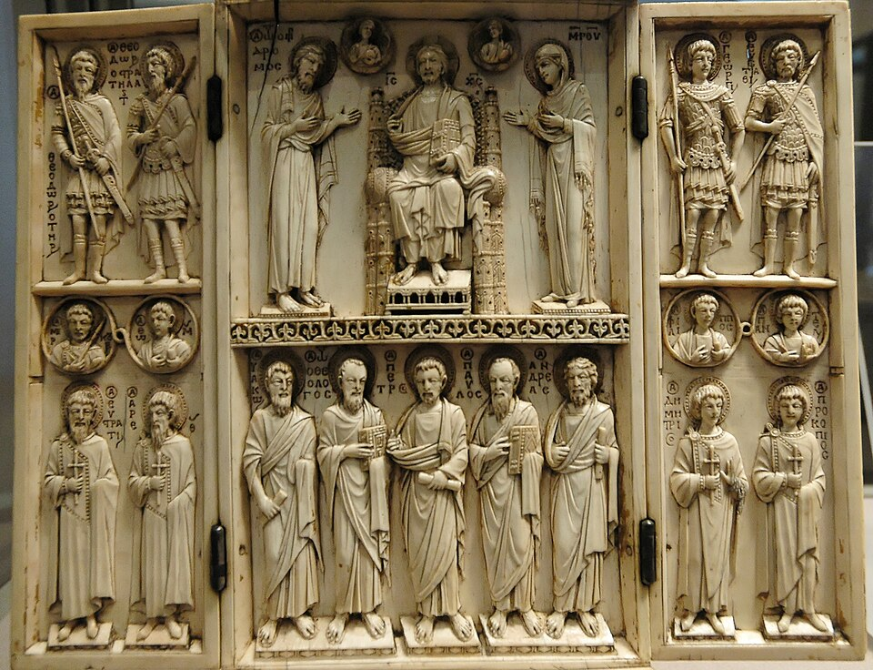
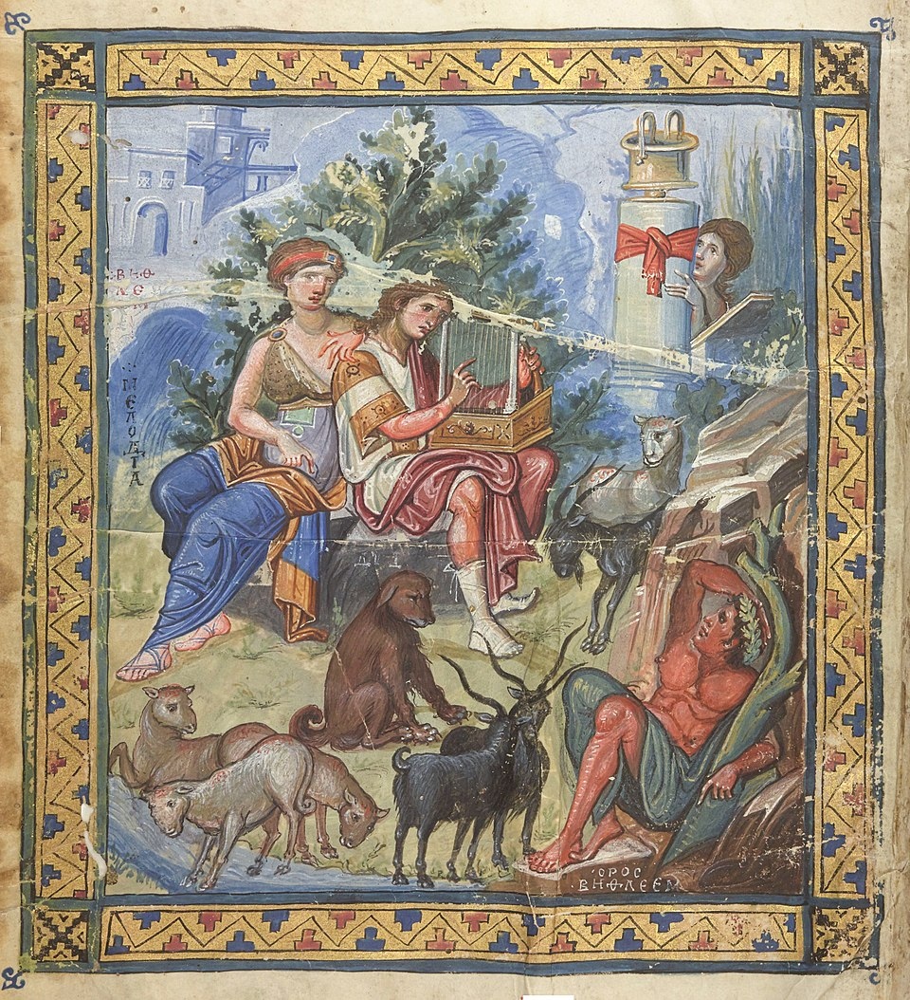

🏆 Meesterwerk: Hagia Sophia
De ultieme expressie van Byzantijnse architectuur en spiritualiteit

Constantinopel (Istanbul), 537 · Architecten: Anthemius van Tralles en Isidorus van Milete
📚 TIJDSGEEST CONTEXT (330-1453)
🌍 POLITIEK PERSPECTIEF
De Byzantijnse kunst (330-1453) ontwikkelde zich binnen het politieke kader van het Oost-Romeinse Rijk, een staat die zichzelf beschouwde als de directe voortzetting van het Romeinse Rijk en die meer dan elf eeuwen standhield als de meest geavanceerde en geciviliseerde beschaving van Europa. De politieke structuur werd gekenmerkt door een goddelijk gelegitimeerde autocratie: de keizer (basileus) regeerde als Gods vertegenwoordiger op aarde, met absolute macht over kerk en staat. Deze caesaropapisme, waarbij de keizer ook het hoofd van de kerk was, schiep een nauwe verbinding tussen politieke en religieuze autoriteit die direct zichtbaar werd in de kunst. De keizer werd afgebeeld met de attributen van Christus - de nimbus, de purperen gewaden, de troon - wat zijn goddelijke legitimatie benadrukte. Keizer Justinianus I (527-565), die het hoogtepunt van Byzantijnse macht vertegenwoordigde, drukte zijn autoriteit uit door middel van monumentale bouwprojecten zoals de Hagia Sophia, waar politieke macht, religieuze devotie en artistieke innovatie samenvloeiden.
De Byzantijnse politieke geschiedenis werd gekenmerkt door cycli van expansie en krimp, die direct de artistieke productie beïnvloedden. De 'Gouden Eeuw' van Justinianus zag de herovering van Italië, Noord-Afrika en Spanje, wat leidde tot een enorme bouwactiviteit en de verspreiding van de Byzantijnse stijl door het Middellandse Zeegebied. De daaropvolgende crisis van de 7e eeuw - met invasies van Avaren, Slaven, Perzen en Arabieren - leidde tot een consolidatie van het rijk en een concentratie van artistieke middelen in de hoofdstad Constantinopel. De Iconoclastische Crisis (726-843) was niet alleen een theologisch debat over de rol van afbeeldingen in de religie, maar ook een politieke strijd tussen keizers die hun autoriteit wilden centraliseren en een kerkelijke hiërarchie die onafhankelijkheid zocht. Deze crisis leidde tot de vernietiging van talloze vroeg-Byzantijnse kunstwerken, maar ook tot de ontwikkeling van verfijnde theologische rechtvaardigingen voor de icoonverering na de herstel van de orthodoxie in 843.
De sociale dynamiek van het Byzantijnse Rijk werd gedomineerd door een hiërarchische structuur met de keizer aan de top, gevolgd door een bureaucratische aristocratie, de clerus, en de grote massa van boeren en ambachtslieden. Constantinopel, met zijn 500.000 inwoners op het hoogtepunt, was een van de grootste en meest kosmopolitische steden van de middeleeuwen, een handelscentrum waar goederen en ideeën uit Europa, Azië en Afrika samenkomen. Het hof was het centrum van artistieke patronage, met keizers die kunstenaars in dienst namen voor staatsprojecten en religieuze stichtingen. De Byzantijnse 'Commonwealth' - een netwerk van staten die cultureel beïnvloed werden door Byzantium zonder politiek deel uit te maken van het rijk - omvatte Kievan Rus, Servië, Bulgarije, en zelfs de Republiek Venetië, wat leidde tot de verspreiding van Byzantijnse artistieke conventies door heel Oost-Europa en het Middellandse Zeegebied.
De verbinding tussen politiek en artistieke stijl was direct en intentioneel. De Byzantijnse kunst ontwikkelde een abstract, anti-naturalistische esthetiek die niet voortkwam uit onvermogen, maar uit een bewuste keuze om spirituele waarheden boven fysieke realiteit te stellen. De gouden achtergronden van mozaïeken en iconen verbeeldden de hemelse sfeer, terwijl de gestileerde, frontale figuren de tijdloosheid van de goddelijke wereld benadrukten. De starre iconografie - met vastgestelde modellen voor Christus, Maria en de heiligen - was geen artistieke stagnatie, maar een theologische keuze: de icoon was geen afbeelding, maar een venster naar het goddelijke, en moest daarom conform zijn aan geaccepteerde modellen. De nadruk op frontaliteit, symmetrie en hiërarchische schaal - waarbij belangrijkere figuren groter werden afgebeeld - weerspiegelde de Byzantijnse maatschappelijke orde met zijn rigide hiërarchie en centrale autoriteit. De mozaïeken van de Hagia Sophia, waar keizer Justinianus en keizerin Theodora aan weerszijden van het altaar werden afgebeeld als gelijken van de heiligen, demonstreerden de goddelijke legitimatie van de keizerlijke macht. De Byzantijnse kunst was daarmee niet slechts decoratie, maar een instrument van staat en theologie, een visuele manifestatie van een politieke en religieuze wereldorde.
Bronnen: Wikipedia - Byzantine art, Byzantine Empire, Justinian I, Byzantine Iconoclasm, Byzantine commonwealth.
📖 LITERAIR PERSPECTIEF
De literatuur van het Byzantijnse Rijk (330-1453) vormt een onlosmakelijke eenheid met de religieuze kunst van deze periode. De Byzantijnse beschaving werd gedragen door Griekstalige christelijke teksten die directe invloed uitoefenden op de iconografie, mozaïeken en architectuur. Het belangrijkste literaire genre was de hymnografie: de Byzantijnse kerk ontwikkelde een rijke traditie van liturgische poëzie die zowel theologische diepgang als esthetische schoonheid combineerde. De kanons van Johannes van Damascus (ca. 675-749) en de kontakia van Romanos de Melodos (ca. 490-556) behoren tot de hoogtepunten van Byzantijnse literatuur en werden direct vertaald naar visuele voorstellingen in kerken en kloosters. Hagiografieën, de heiligenlevens, vormden een ander dominant genre. Deze verhalen over martelaren, asceet en wonderdoeners dienden als bronnen voor talloze iconen en fresco's. Het leven van Sint-George, Sint-Catharina en Sint-Demetrius werd zowel in tekst als in beeld overgeleverd, waarbij de literaire versie vaak de visuele traditie dicteerde. Theologische geschriften van de Kerkvaders, met name de homilieën van Johannes Chrysostomos en de werken van de Cappadocische vaders (Basilius de Grote, Gregorius van Nazianze en Gregorius van Nyssa), beïnvloedden de thema's en composities van Byzantijnse kunst. De complexe discussies over de natuur van Christus, de Drie-eenheid en de rol van iconen (de iconoclastencontroverse, 726-843) werden in traktaten vastgelegd en bepaalden wat wel en niet afgebeeld mocht worden. Wereldlijke literatuur bestond parallel aan de religieuze traditie. Het hof in Constantinopel produceerde hofpoëzie, epische gedichten zoals het 'Digenis Akritas' (een grensheld-epos uit de 9e of 10e eeuw) en historiografische werken van auteurs als Procopius en Anna Komnene. De beroemde 'Alexiade' van Anna Komnene schetst een levendig beeld van de kruistochten en de diplomatieke betrekkingen met het Westen. Deze wereldlijke teksten boden stof voor luxe manuscripten met miniaturen, hoewel het merendeel van de Byzantijnse boekverluchting religieus van aard was. De relatie tussen literatuur en kunst was in Byzantium organisch: schrift en beeld vulden elkaar aan in de liturgie, de kerkinrichting en de private devotie. Typologie, waarbij oudtestamentische scènes werden gekoppeld aan nieuwtestamentische gebeurtenissen, was zowel een literair als een artistiek principe. De Byzantijnse esthetiek van verhevenheid, spiritualiteit en rituele herhaling vindt haar pendant in de liturgische teksten die de kunst begeleidden. Deze literaire traditie had directe invloed op de beeldende kunst. De theologie van het icoon, verdedigd door Johannes van Damascus, stelde dat beelden net als woorden konden fungeren als vensters naar het goddelijke. De canonieke regels voor iconenschilderkunst weerspiegelden de strikte literaire conventies van de Byzantijnse hymnografie - beide waren gericht op de overdracht van onveranderlijke goddelijke waarheid, niet op individuele expressie. De parallelle ontwikkeling van literatuur en beeldende kunst in Byzantium getuigt van een geïntegreerde culturele benadering waarin alle kunstvormen dienden tot verheerlijking van God en versterking van de orthodoxie.
🧠 PSYCHOLOGISCH PERSPECTIEF
De Byzantijnse mens leefde in een wereld waarin het individu volledig ondergeschikt was aan de goddelijke orde en de keizerlijke autoriteit. Het mensbeeld werd gedomineerd door de overtuiging dat het aardse leven slechts een voorbereiding was op het eeuwige leven, wat leidde tot een diepgaande spiritualisering van alle aspecten van het bestaan. De gemiddelde Byzantijnse burger ervoer een constante spanning tussen de materiële wereld en de spirituele realiteit, waarbij het transcendentale als enige ware werkelijkheid werd beschouwd.
Psychologisch gezien kenmerkte deze periode zich door een collectieve angst voor het Laatste Oordeel en een diep verlangen naar goddelijke vergeving. Deze angst werd niet als negatief ervaren, maar als een noodzakelijke emotie die de gelovige dichter bij God bracht. Kunstenaars werkten in een staat van religieuze devotie die grensde aan trance, waarbij het creatieve proces werd gezien als een vorm van gebed. De individualiteit van de kunstenaar werd bewust onderdrukt; het ging niet om persoonlijke expressie, maar om het zichtbaar maken van de goddelijke waarheid.
De psychische toestand van de Byzantijnse samenleving werd gekenmerkt door een paradoxale combinatie van wereldvreemdheid en intense betrokkenheid bij religieuze disputen. De iconoclastische periode (726-843) onthult hoe diep religieuze beelden doordrongen waren van de collectieve psyche - het vernietigen van iconen werd ervaren als een aanval op de ziel zelf. Na de overwinning van de iconodulen ontwikkelde zich een theologie van het beeld waarin de afbeelding werd gezien als een venster naar het goddelijke, wat de psychologische noodzaak van visuele mediatie in de religieuze ervaring onderstreept.
Emotioneel domineerde een sfeer van plechtige waardigheid en verstilde aanbidding. De vlakke, onnatuurlijke representaties waren geen esthetische keuze maar een bewuste afwijzing van de zintuiglijke wereld. Het goud in de mozaïeken symboliseerde niet alleen rijkdom, maar het goddelijke licht dat de gelovige omhulde. De frontale, starre figuren dwongen de beschouwer tot een directe confrontatie met het heilige, waarbij elke hint naar individuele persoonlijkheid of emotionele expressie werd vermeden om de universele, tijdloze aard van het afgebeelde te benadrukken. Deze psychische dynamiek verklaart ook de opmerkelijke consistentie van de Byzantijnse stijl over meer dan elf eeuwen. In een wereld die constant werd bedreigd door externe vijanden - Arabieren, Seltsjoeken, kruisvaarders, Ottomanen - bood de onveranderlijke kunstvorm een gevoel van permanence en goddelijke bescherming. De kunstenaar was geen individuele schepper maar een instrument van de kerk, werkend binnen strikte canonieke regels die de orthodoxie waarborgen. Deze collectieve aanpak weerspiegelde de bredere Byzantijnse samenleving, waar individuele ambitie ondergeschikt was aan het welzijn van de polis en de gehoorzaamheid aan de keizer als Gods vertegenwoordiger op aarde.
🏛️ HISTORISCH PERSPECTIEF
- Overname van Rome: Behoud van Romeinse technologie en wetenschap
- Pest van Justinianus (541-549): Doodt 25-50% van de bevolking, verzwakt het rijk
- Islamitische veroveringen (7e eeuw): Verlies van Syrië, Egypte, Noord-Afrika
- Macedonische Renaissance (9e-11e eeuw): Herleving na de iconoclastische crisis
- Kruistochten: Latijnse kruisvaarders plunderen Constantinopel (1204)
💭 FILOSOFISCH PERSPECTIEF
De Byzantijnse kunst (330-1453) werd filosofisch gefundeerd door de synthese van vroegchristelijke theologie en neoplatonisme, waarbij de figuur van Augustinus van Hippo (354-430) een centrale rol speelde. Augustinus, die zelf beïnvloed werd door het neoplatonisme van Plotinus (204/5-270), ontwikkelde een epistemologie waarin kennis van God de hoogste vorm van waarheid was. Zijn doctrine van goddelijke verlichting (divine illumination) stelde dat de menselijke geest niet uit zichzelf tot waarheid kan komen, maar afhankelijk is van Gods verlichtende genade. Dit vertaalde zich direct naar de Byzantijnse esthetica: de icoon werd niet gezien als een menselijke creatie, maar als een 'venster naar de hemel', waarbij de materiële verf fungeerde als drager van goddelijke tegenwoordigheid. De beroemde iconenverering (iconodulie) werd filosofisch verdedigd door Johannes van Damascus (675-749), die in zijn 'Apologia tegen de Iconoclasten' betoogde dat de vleeswording van Christus materiële afbeelding had geheiligd: als God zichtbaar werd in Christus, kon zijn beeld met recht worden afgebeeld. Metafysisch gezien was de Byzantijnse kunst geworteld in het neoplatonische concept van 'emanatie' - de overvloeiing van het goddelijke Ene naar de materiële wereld, waarbij kunst fungeerde als een middel om deze goddelijke aanwezigheid te openbaren. De stereometrische vormgeving, met haar geometrische abstractie en ontbrekende lineair perspectief, was geen technische beperking maar een bewuste keuze om de transcendentie van het afgebeelde te benadrukken: figuren zweven in een gouden ether die de tijdloosheid van de hemel voorstelt, niet de aardse ruimte. De gouden achtergrond van iconen verwees naar het 'ongeschapen licht' van de Tabor, het goddelijke licht dat de apostelen zagen tijdens de Transfiguratie. Ethisch gezien was de Byzantijnse kunst diep geworteld in het ascetische ideaal van de vroege kerk: de kunstenaar was niet een individueel genie (zoals in de Renaissance), maar een dienaar van de kerk, wiens persoonlijke stijl ondergeschikt was aan de canonieke traditie. De anonymiteit van veel Byzantijnse kunstenaars weerspiegelde de theologische overtuiging dat ware schoonheid niet van de mens, maar van God komt. De Hesychastische controverse (14e eeuw), waarbij Gregorius Palamas (1296-1359) de 'nergia' of goddelijke energieën verdedigde die de mens kan ervaren, versterkte deze sacrale esthetica: de icoon werd een 'sakrament' waarin de goddelijke energieën aanwezig waren. Werken zoals de 6e-eeuwse 'Christus Pantokrator' van de Sinaï verbeelden dit filosofisch programma: de asymmetrische ogen van Christus (één streng, één mild) representeren zijn dubbele natuur als rechter en barmhartige verlosser, terwijl het gouden mozaïeklicht de Tabor-ervaring oproept. De 'Theotokos' (Moeder Gods) iconen verwezen naar de incarnatie: in Maria werd het goddelijke materie, waardoor de materiële wereld werd geheiligd. Esthetisch gezien ontwikkelde Byzantium een 'omgekeerde perspectief' waarbij lijnen niet convergeren naar een verdwijnpunt, maar divergeren naar de kijker - een bewuste breuk met het klassieke perspectief om de actieve betrokkenheid van de gelovige bij het beeld te benadrukken. De frontale, hiëratische compositie van keizerlijke portretten (zoals in de mozaïeken van Ravenna) verwees naar het Byzantijnse 'caesaropapisme': de keizer als vicarius Christi, wiens wereldlijke macht direct van God afkomstig was. De liturgische functie van Byzantijnse kunst - iconen werden gekust, processies werden gehouden, mirre werd verspreid - maakte esthetica tot een vorm van 'theologische participatie': het zien van de icoon was een vorm van gebed, een 'visuele communie' met de heilige. De iconoclastische crisis (726-843) toonde de filosofische diepgang van deze kwestie: waren iconen afgoderij (zoals de iconoclasten betoogden, verwijzend naar het bijbelse beeldverbod) of juist een bevestiging van de incarnatie (zoals de iconodulen verdedigden)? De overwinning van de iconodulen (het 'Triomf van de Orthodoxie' in 843) betekende een definitieve bevestiging van de materiële wereld als drager van het goddelijke. Samenvattend was de Byzantijnse kunst een visuele theologie, geworteld in neoplatonische metafysica, augustinische epistemologie en patristische ethiek, waarbij schoonheid niet esthetisch maar soteriologisch werd gedefinieerd: als middel tot heil en vereniging met God.
Bronnen: Stanford Encyclopedia of Philosophy - 'Augustine', 'Neoplatonism', 'Medieval Political Philosophy'; Wikipedia - 'Byzantine art', 'Iconodulie', 'Iconoclasme', 'Johannes van Damascus', 'Gregorius Palamas', 'Hesychasme'.
🎨 STIJLFIGUREN & THEMA'S
🖼️ Voorstelling
Frontaliteit: Figuren staan recht naar de kijker, ogen groot en starend. Symbolische presentatie.
✨ Materiaal
Mozaïeken: Gouden tesserae creëren schitterend licht. Goud = goddelijk licht.
👁️ Ogen
Grote ogen: Oversized, expressieve ogen die de kijker aankijken. De ziel spreekt.
🏛️ Architectuur
Koepels op pendentieven: Centrale kerken met zwevende koepels. Licht valt van boven.
🎨 Kleur
Blauw en goud: Diep blauw voor de hemel, goud voor het goddelijke. Symbolisch, niet natuurgetrouw.
📐 Compositie
Hierarchische schaal: Belangrijkste figuren zijn groter. Christus > Maria > heiligen.
🎯 Centrale Thema's
- Deïesis (Voorbede): Christus tronend, Maria en Johannes pleiten voor de mensheid
- Pantocrator (Almachtige): Christus als rechter van het universum
- Theotokos (Moeder Gods): Maria met kind - de verbinding tussen mens en goddelijk
- Heiligenportretten: Starende figuren met halos en martelaarsattributen
- Liturgische scènes: Communie, processies, keizers die offeren
🖼️ TOP 10 MEEST INVLOEDRIJKE WERKEN
1. Hagia Sophia (Heilige Wijsheid) (537)
Constantinopel (Istanbul), Turkije · Architecten: Anthemius van Tralles en Isidorus van Milete
Achtergrond: Gebouwd door keizer Justinianus na de Nika-oproer. Voor bijna 1000 jaar de grootste kathedraal ter wereld. De koepel was een technisch wonder - 31 meter diameter.
🔍 STIJLANALYSE
Pendentief-constructie: Overgang van vierkante basis naar ronde koepel via driehoekige segmenten. Revolutionair en beïnvloedde alle latere moskeeën.
Licht: 40 ramen creëren een "lichtkrans". De koepel lijkt te zweven op licht - goddelijke ondersteuning.
Mozaïeken: Gouden tesserae die flikkeren in het kaarslicht. De kijker wordt omringd door het goddelijke.
Monumentaliteit: 70x75 meter, 55 meter hoog. Justinianus: "Salomon, ik heb je overtroffen."
2. San Vitale Basiliek (547)
Ravenna, Italië · Byzantijns exarchaat

Achtergrond: Gebouwd tijdens de Gotische Oorlogen. De mozaïeken tonen Justinianus en Theodora als Gods plaatsvervangers op aarde.
🔍 STIJLANALYSE
Justinianus-paneel: De keizer staat centraal met soldaten en priesters. Hij houdt het brood van de eucharistie - keizerlijke en religieuze macht verenigd.
Theodora-paneel: De keizerin staat spiegelbeeldig tegenover haar man, even groot en majestueus. Vrouwelijke macht in een mannelijke wereld.
Goud en purper: Gouden achtergronden, diep paarse kleding. Kleuren zijn politiek en religieus.
Oriëntaalse luxe: Hangende sluiers, zware parels, koopmanszijde - luxe uit Constantinopel.
3. Christus Pantocrator (6e eeuw)
Klooster van St. Catharina, Sinai, Egypte · Encaustiek op hout · 84 x 45,5 cm

Achtergrond: Een van de weinige overgebleven iconen uit de vroege Byzantijnse periode, bewaard in het geïsoleerde klooster op de berg Sinai.
🔍 STIJLANALYSE
Twee gezichten: Asymmetrisch - één kant streng en rechtvaardig, andere medelevend en menselijk. De dubbele natuur van Christus.
Encaustiek: Pigment met hete was, glanzend en levensecht. Duur en moeilijk, alleen voor belangrijkste werken.
De blik: De ogen volgen de kijker - een levende aanwezigheid. Christus kijkt in je ziel.
De zegen: Rechterhand in zegeningshouding - Christus als priester en koning.
4. Onze-Lieve-Vrouw van Vladimir (12e eeuw)
Tretyakov Galerie, Moskou · Icoon op hout · 104 x 69 cm

Achtergrond: Een van de meest vereerde iconen in de Russisch-orthodoxe kerk. 800 jaar beschermd tegen plunderaars en branden.
🔍 STIJLANALYSE
Hodegetria: Maria wijst naar het kind - zij toont de weg naar Christus. Het meest voorkomende icoon-type.
Tederheid: Maria toont menselijke tederheid. Haar wang raakt het kind, haar blik is zacht. De menselijke kant van het goddelijke.
Patinas: Door eeuwen van aanbidding een diepe, warme gloed. De "patinas" van devotie.
Byzantijns erfgoed: Gouden achtergrond, hiërarchische schaal, grote ogen - een venster naar Constantinopel.
5. Christus Pantocrator (11e eeuw)
Klooster van Daphni, Griekenland · Mozaïek · Koepel

Achtergrond: De kerk van Daphni is een meesterwerk van de Macedonische Renaissance - de heropleving na het iconoclasme.
🔍 STIJLANALYSE
Koepelcompositie: Christus in de koepel, omringd door engelen. De kijker kijkt omhoog - de hemel opent zich.
Gouden achtergrond: Geen lucht, geen landschap - alleen goud. Het koninkrijk der hemelen.
Sereniteit: Kalm en streng tegelijk. Goddelijke majesteit - de "Byzantijnse blik" staring into eternity.
Technische perfectie: Kleine, fijne tesserae, subtiele overgangen. Werk van meesters.
6. Rossano Evangeliarium (6e eeuw)
Kathedraal van Rossano, Italië · Purper perkament met zilver en goud · 300 pagina's

Achtergrond: Het oudste evangeliarium met miniaturen, gemaakt voor een Byzantijns exarch in Italië. Purper (duurder dan goud) en gouden letters.
🔍 STIJLANALYSE
Purper en goud: Alleen de keizer mocht purper dragen. Deze bijbel is een staatsieportret van het Woord.
Illustraties: Geboorte van Christus, wonderen, passie. Figuren klassiek maar met Byzantijnse ogen.
Architectonische frames: Zuilen, frontons - Byzantium als erfgenaam van Rome.
Zilveren schrift: Zilver op purper - alleen de rijkste manuscripten. Adembenemend mooi.
7. David Schalen (7e eeuw)
Metropolitan Museum of Art, New York · Zilver met verguldsel

Achtergrond: Negen zilveren schalen met scènes uit het leven van David, gemaakt voor een Byzantijns patriciër.
🔍 STIJLANALYSE
Narratieve cyclus: David en Goliath, David en Saul, David als koning. Byzantijnse "stripverhalen" op zilver.
Reliëftechniek: Figuren staan uit het zilver op, gedeeltelijk verguld. Diepte en beweging in een plat medium.
Oud-Testamentisch: David als voorafschaduwing van Christus - goede herder, koning, psalmist.
Classicisme: Gespierd, beweeglijk, natuurlijk. Vroege Byzantijnse kunst dicht bij Rome.
8. Chludov Psalter (9e eeuw)
Historisch Museum, Moskou · Perkament · 169 bladzijden

Achtergrond: Gemaakt na het iconoclasme, waarschijnlijk in het klooster van St. Theodosia in Constantinopel. Uniek vanwege de vele miniaturen die de psalmen illustreren.
🔍 STIJLANALYSE
Anti-iconoclastisch: Sommige miniaturen tonen de overwinning van de iconodulen (voorstanders van beelden) over de iconoclasten.
Illustratiestijl: Snelle, expressieve tekeningen - niet zo gepolijst als andere Byzantijnse kunst. Persoonlijker en levendiger.
Christologische interpretatie: Oude-Testamentische scènes worden als profetieën van Christus geïllustreerd.
Schitterende kleuren: Diep blauw, goud, cinnaberrood - de rijkdom van het Byzantijnse hof.
9. Harbaville Triptych (10e eeuw)
Louvre, Parijs · Ivoor · 28 x 24,2 cm (gesloten)

Achtergrond: Een draagbaar privé-altaar, waarschijnlijk gemaakt voor een welgestelde patriciër. Het toont de Deësis (voorbede) en heiligen.
🔍 STIJLANALYSE
Triptych-vorm: Twee vleugels die openen om een centrale scène te onthullen. Privé-devotie voor thuis of op reis.
Deësis: Centraal Christus, links Maria, rechts Johannes de Doper. Zij pleiten voor de mensheid bij de rechter.
Ivoor snijwerk: Extreem fijne details in ivoor - de krullen van het haar, de plooien van de kleding. Meesterlijk vakmanschap.
Intimiteit: Kleine schaal voor persoonlijk gebed. De heiligen zijn dichtbij, toegankelijk.
10. Parijse Psalter (10e eeuw)
Bibliothèque Nationale, Parijs · Perkament · 449 pagina's

Achtergrond: Waarschijnlijk gemaakt voor keizer Basiliscus II. Een van de mooiste Byzantijnse manuscripten, met 14 grote miniaturen die de psalmen illustreren.
🔍 STIJLANALYSE
Koning David: De psalmen worden geïllustreerd met scènes uit Davids leven, maar David is een Byzantijnse keizer - gouden kroon, purpere mantel.
Klassieke invloed: De miniaturen tonen meer naturalisme dan andere Byzantijnse kunst - dit is de "Macedonische Renaissance" die terugkeert naar klassieke idealen.
Landschappen: Zachte heuvels, architectuur, bomen - een verfijnde wereld die de psalmen omgeeft.
Keizerlijke luxe: Goud, purper, ultramarijn blauw - dit manuscript kostte meer dan een paleis.
📚 CONCLUSIE: HEMEL OP AARDE
De Byzantijnse kunst leert ons:
- Dat kunst devotional is: Geen kunst om naar te kijken, maar om doorheen te kijken - naar het goddelijke
- Dat licht belangrijker is dan vorm: Gouden achtergronden, gloeiende mozaïeken - het goddelijke is licht
- Dat de keizer heilig is: Staat en kerk zijn één, de keizer is Gods plaatsvervanger
- Dat traditie heiliger is dan vernieuwing: 1000 jaar dezelfde stijl - continuïteit als waarde
- Dat de ogen de ziel zijn: De starende blik die de kijker doorboort
Byzantium was het oosten dat Rome overleefde, en zijn kunst bewaarde de klassieke erfenis voor de wereld.